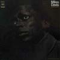

|
#バイバイ会社 とりあえずターニングポイント(かな?) | |
| 2001.3 / 2001.5 |
それはそれとして、久々にCD買いに街へ行ってきました。
#電気マイルス、1969年のアルバムです。ON THE CORNERみたいにリズムの渦みたいな感じではないですけど、テンション抑えた中でジワジワ盛りあがっていくよーな感じです。初期のウェザーリポートみたいな感じ.....というかW.ShorterとJ.Zawinulが居るって事は逆で初期ウェザーリポートがこんな感じの音を標榜してたのかな？(あんまりJAZZ詳しくないんで...すいません)
最近ON THE CORNERを聴かせてもらってから少しずつマイルスを聴いてるんですけど、何だかすごいですね。このアルバムが1969年って30年以上前の発売なんですけど、昔の音だからとか本当に超越した強靭さを感じます。ジャズばっかし聴いてる人(会社に居た)の怖さっていうか....ほんとにはまりそーです。

SONY MUSIC ENTERTAINMENT: SRCS-9713 (original release 1969)
-2001.4.19
#そうそう、かっちゃんからのお誘いで今日の一枚なんてのに参加させて頂いてます。
なんだか余り考えずに「参加しますよー」とか返事しちゃったんですけど.....ちょっとビビってます、俺浮いてんじゃないだろーか？とか。
-2001.4.15
#廃車寸前の車のよーに使われてます(会社の人は見ないよーに、見ても何も言わないよーに)、4月中は何もできなそーな感じです。ゴング無理。
えーと4/7の新宿タワレコのPHEW+BIKKEのイベントをちょっとだけ見てきました、コレの為に一年振りくらいの会社の同期飲み会を遅刻したのは黙っておきました。
そんな訳でAUNT SALLY LIVE 1978-1979を買いました、予想以上にかっこ良かったです、パンゴとかにも通じるような80年代初期の音。最近の音楽よりもこの頃の音にリアリティを感じるのは俺だけかな？リアルタイムじゃないのにね。
-2001.4.6
#もーちょいで仕事辞めるってのに、現在死ぬほど忙しいです。
ピチカートファイヴは解散するし、野茂はノーヒットノーランするし、友達は結婚するってーのにね。
そんな訳でほとんどどこにも行ってないし何もしてません。
とか言いつつも4/1には代々木公園でやってる春風を、ちょっとだけ見に行きました。見たというか通過したって感じだったけど。「わー今年もやってるなぁ」と。
あと藤原カムイの40GBって画集を買いました。白夜書房とかからコミックス出してた頃の昔の画が沢山有って嬉しかったです、この頃のマンガよりもデザインや画にウェイトを置いてた頃の質感がすごい好きで......今はもう立派にマンガしいマンガを描くようになってしまって、あまり興味が無くなっちゃったんですけど。